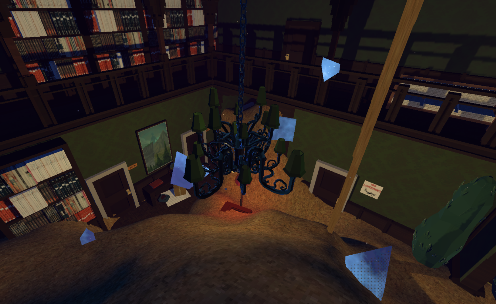

Surreality Check is the first project by my company, Absurdity; Interactive. I'm incredibly proud to have put out such a polished game, even if our marketing has left the response middling at best. That's also the lesson I took away from SRC: though I love to make art, I also want people to see it, and it's up to me to put it in front of their noses. Our next project is already underway, and this time I made sure to plan in opportunities to show it off in public and get feedback right from the jump.
SURREALITY CHECK
Character Themes
Main variation. Arriving in an otherworldy lobby, you're supposed to be given the conflicting feelings of elevator music while you wait. and an eerie, otherworldly edge.
Cerberus. A deeply conflicted person with two voices always yapping in their ear, telling them how to feel and behave. They're always a little disoriented and have yet to learn how to deal with their busy head.
The Reaper. Past his prime, and busy remembering how good he used to be. He's insecure and stuck in the past, which I wanted to reflect with a sort of "old man jazz" feeling, as one of my teachers once described it.
The thirsty Vampire. It's all in the name, sometimes. The Vampire has been lonely for a very, very long time, and is just looking to party with anyone (willing or otherwise.)
Theme Degredation
Each theme is gradually degredated as the game continues, reflecting game state of the game world. As an example, here's the Vampire's variations for the second and third "day":
It's a simple change, but effective in not overdoing the transition and allowing a player to second guess themselves during a first playthrough.

Remaining Tracks
I'm not putting all music variations down, but I did want to show off a global overview of the rest of the music in the game.
Main menu (without humming, which can be toggled in-game and is thusly not included in the bounce.)
The Doctor. This is the track for, arguably, the main gameplay loop. Slightly intimidating, yet still in the realm of liminal space by nature of its connection to the more floaty menu theme. The Doctor is the most "real-world aligned" character which is why his track is quite dry.
Final confrontation. This part has three increasingly intense versions, all based around the Doctor's theme. I'm sharing the final one, you can play the game if you want to hear the rest!